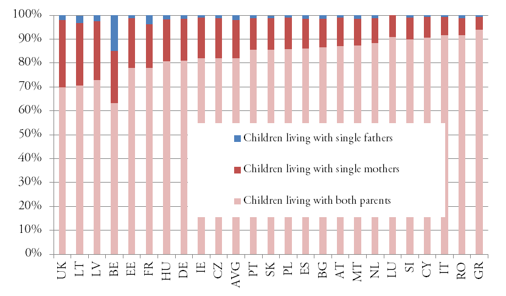

THE COMMITTEE ON EMPLOYMENT AND SOCIAL AFFAIRS (EMPL)
With the Confederation of Family Organisations in the EU (COFACE) naming 2014 as the year for 'Reconciling Work and Family Life', what can be done to strengthen single parents' position in the labour market, and to ensure that neither gender is financially punished for having children?
Chairperson: Dorothea Weber - Germany
Explanation and relevancy of the Topic:
The high unemployment rates in Europe has been a prominent topic for many years. 2014, the Year for ‘Reconciling Work and Family Life’, brings a pressing matter to the table: single parents’ position in the labour market. They are “one of the two groups with the highest risk of poverty, with the percentage at risk of poverty ranging from 28% in the Nordic countries to 34% in the North-Western countries”. This raises the question of responsibility; especially whether it should be the governments’ task to come to their rescue.
The most recent data shows that 10.4% of households with children are run by single parents. Of these, only 1.2% are single-father homes and 9.1% are single-mother homes. Some would argue that these discrepancies result from factors such as the gender pay gap, gender roles, legislation and the access to contraception and abortion.
 Figure 1: Proportion of children by living arrangements based on parental status – LFS 2010
Studies show that mothers with partners are much more likely to be employed than single mothers. This indicates that single mothers have to choose between taking care of their children and taking up a job. However, a job and the income connected to it are necessary for single parents to be able to afford services such as childcare or after-school care. Without a steady income they are dependent on state aid such as paid paternity and maternity leave or child benefits. In order to balance their children’s needs as well as their finances, many single parents take up part-time jobs.
The issue of social exclusion is part of the topic employment and social policy, which is a shared competence between the EU and its Member States. Most policies are currently implemented on a national level while the EU has a complementing function.
In order to tackle this issue, the first question that needs to be answered is whether a welfare state system with social benefits is a way forward or whether the responsibility lies with the single parents themselves. In other words: is it the Member States’, EU’s or any governments’ task to protect the groups at risk of poverty? What might the effects of state interference in the labour market be?
Links:
2014 Year of Reconciling Work and Family Life – Official Homepage with a short explanation: http://eyf2014.wordpress.com/european-year-2014/
7 Days: Euro crisis, single parents – introductory information about the life of single parents in the EU: http://youtu.be/Z9TslzjMII4?t=11m44s
Maternity and paternity leave across the EU – The Independent – Article summarising the different policies (2010): http://www.independent.co.uk/life-style/maternity-and-paternity-leave-across-the-eu-2112229.html
“I am prouder of my years as a single mother than of any other part of my life” – an article by J K Rowling about her life as a single mother:
http://www.gingerbread.org.uk/content/1901/J-K-Rowling
Who will speak up for the universal welfare state now? – an article from The Guardian about the welfare system in the UK:
http://www.theguardian.com/commentisfree/2013/jan/21/welfare-state-universal-benefits
Key Terms:
Links:
European Union Labour Force Survey 2010 (LFS 2010) – contains the most recent data collected on the topic:
http://epp.eurostat.ec.europa.eu/cache/ITY_OFFPUB/KS-SF-11-030/EN/KS-SF-11-030-EN.PDF
Definitions by the International Labour Organisation – used in the LFS 2010: http://epp.eurostat.ec.europa.eu/statistics_explained/index.php/EU_labour_force_survey_-_methodology
A description of the project ‘Maisons Relais’ in Luxembourg – a day center for children: https://europa.eu/youth/vp/vol_organisation/48000206977_en
‘Europe’s other Crisis’ – The Economist – Article about the demographic crisis in the EU: http://www.economist.com/node/21557774
Key Questions:
· What exactly are the difficulties single parents face when trying to (re)enter the labour market?
· Considering its competencies, what concrete measures can Member States take regarding social policy?
· What do the different approaches in the Member States look like?
§ How much do the measures vary?
§ What consequences does this have in terms of the single parents’ position in the labour market?
§ What is the situation in your country?
· In times of high unemployment rates throughout the EU, especially amongst young people, what effects does the strengthening of one specific group in the labour market have?
Links:
Eurozone unemployment remains at 12% - EuropeanVoice:
An article about the high unemployment rates throughout the EU: http://www.europeanvoice.com/article/eurozone-unemployment-remains-at-12/
Your rights country by country – You can click through various countries and have a look at the legislation concerning single parents: http://ec.europa.eu/social/main.jsp?catId=858&langId=en
FAQ on the EU competences and the European Commission powers – short answers to all you questions about competences: http://ec.europa.eu/citizens-initiative/public/competences/faq?lg=en#q3
Key Facts and Figures:
These figures are taken from the Short Statistical Report No. 3, “Single parents and employment in Europe” by Kai Ruggeri and Chloe E. Bird from 2014. It features only the countries included in the LFS database.
Figure 2: Differences in part-time and full-time employment between single young women with and without children – LFS 2010
Key Conflicts:
The question that is essential to this topic is whether social benefits are something the EU and/or Member States should provide or whether single parents and other groups should be responsible for their own employment and therefore learn to cope without state aid. What it comes down to is the two opposing theories of free market economy versus social market economy.
An aspect, which needs to be acknowledged, is the legislative situation. The EU has the competence to complement and support the Member States’ actions. The reason for this is the subsidiarity principle, which ensures that decisions are taken as closely as possible to the citizen. Considering the great variety in the 28 Member States in terms of the composition of single-parent households, this does seem like a sensible concept.
Nonetheless, there are possibilities for the EU to act. The European Parliament can ensure that more data is collected on the matter so as to understand the situation better in order to provide legislation tailored to the situation. Another helpful tool is the Open Method of Coordination (OMC), which brings together Member States in order to work towards common objectives while the Commission takes on a surveillance role.
Additionally, the European labour market is a complex system. It is not easily predictable what the support of one group might mean for another. Considering the amount of people in desperate need of employment, the question arises whether it would really be fair to support single parents rather than for instance youngsters in search for a job.
Should the decision be made, however, to aid the single parents, then the question remains which measures might be appropriate? Many complain about a lack of flexible work opportunities, which would be ideal for people taking care of a child. Single parents could be given the chance to work part-time and be given the option of taking time off during school holidays. Other possible measures would be paid maternity and paternity leave as well as the further establishment of child-care and after-school care. This would give single parents more time and flexibility to (re)enter the labour market.
Links:
Flexible child care for single parent families – Mom’artre; a video and a summary about the project: http://inno-serv.eu/content/flexible-child-care-single-parent-families-–-mom’artr
Gingerbread – an organisation providing advice and practical support for single parents in the UK: http://www.gingerbread.org.uk/content/428/About-us
Principle of Subsidiarity – a short and comprehensive explanation:
http://europa.eu/legislation_summaries/institutional_affairs/treaties/lisbon_treaty/ai0017_en.htm
A factsheet on flexible working from the Chartered Institute of Personnel and Development: http://www.cipd.co.uk/hr-resources/factsheets/flexible-working.aspx
Country profiles – a platform where you can find out more about the successful policies in each Member State: http://europa.eu/epic/countries/index_en.htm
Denmark: Combining work and family life successfully – a country profile:
http://europa.eu/epic/countries/denmark/index_en.htm
Stakeholders:
Links:
The Official Website of the Directorate General of Employment and Social Affairs : http://ec.europa.eu/social/main.jsp?catId=751&langId=en
Official Website of the Committee on Employment and Social Affairs: http://www.europarl.europa.eu/committees/en/empl/home.html
Official Website of the EPSCO: http://www.consilium.europa.eu/council/council-configurations?lang=en#epsco
The Official Website of COFACE and an explanation of what it is and does can be found here: http://www.coface-eu.org/en/About/What-is-COFACE/
Existing Measures: